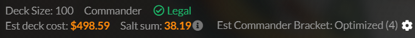

Magic 101
How to Play!
First let's go over deck building.
For the commander format you need a deck of 100 unique cards excluding basic lands that are all in the commander's color identity which is determined by their mana cost as well as their rules box. The commander if a deck can be any legendary creature or artifact that turns into a creature. It is recommanded you have 37 lands, 10 artifacts that tap for mana, around 20 creatures, handful of removal, and what ever else. deck building is the most free part of MTG as there are very little restrictions to how to do it.

For player the game you have several phases to go through. In order they are:
Untap - This is where you turn your cards virtical if they weren't before.
Upkeep - This is where effects and instant cards can be played.
Draw step - Where you draw your card for the turn.
Main Phase - This is where you do most of your actions like play a land, cast spells which are any card but lands, and tap to activate abilties.
Combat - where you assine attackers to deal damage to other players or planeswalkers. after you declare attackers who ever they are going after has to declare blockers if any, then damage amd clean up.
Main Phase two or again - where you can do more stuff like in the first main phase.
End step - Where you finish up your turn, discard down to hand size, cast any last minute instances.
In this example this is how your board will typically look before you start.

This is where you should have your cards rest, creatures at the top, artifacts and enchantments in the middle or off to the side, and lands at the bottom.